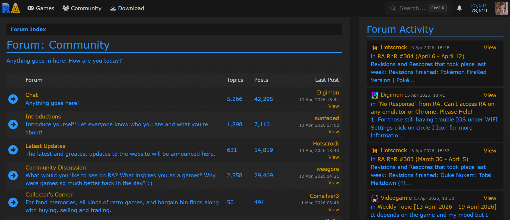
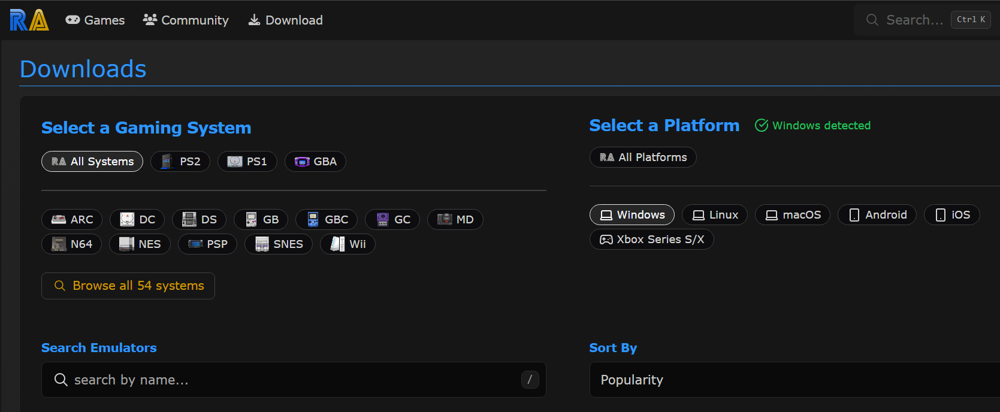

Usage

Like many forums of its kind to post on RetroAchievements you need to make an account. There are subforums where topics at a more specific level are discussed and roles one can earn through applications that provide more power than your typical user. Still, RetroAchievements as an online forum differs in many ways from its relatives. It is an interactable platform that communicates with external programs to keep track of user actions and translates those to website data. When communicating on this website there is an outline to follow that is picked up the longer the site is used.

A user of the site was quoted as saying, "What makes RetroAchievements special is the fact it connects all of us just by playing video games together, something often done alone, on a website where we can share that love for gaming with each other." This sentiment is often shared by those who engage in online forum posting, a sense of community.